Statistical Measures¶
The Simulator class collects two list instances
with raw data.
One list has the length of a session, the other list has the maximum stake
during a session. We need to create some descriptive statistics to
summarize these stakes and session lengths.
This section presents two ordinary statistical algorithms: mean and
standard deviation. Python 3 introduces the statistics module,
which simplifies some of the programming required for
this chapter. We’ll present the details of how to compute these two statistics for those
who are interested in programming fundamentals.
In Statistical Analysis we’ll address the overall goal of gathering and analyzing statistics.
In Some Foundations we’ll look at the  operator which
is widely used for statistical calculation. We’ll see how to implement this
in Python.
operator which
is widely used for statistical calculation. We’ll see how to implement this
in Python.
In Statistical Algorithms we’ll look specifically at mean and standard deviation.
Since we’re apply statistical calculation to a list of integer values, we’ll
look at how we can extend the list in IntegerStatistics Design.
We’ll enumerate the deliverables for this chapter in Statistics Deliverables.
Statistical Analysis¶
We will design a class with responsibility to
retain and summarize a list of numbers and produce the average (also
known as the mean) and standard deviation. The Simulator class
can then use this this IntegerStatistics class to get an average
of the maximum stakes from the list of session-level measures. The Simulator
can also apply this IntegerStatistics class to the list of session
durations to see an average length of game play before going broke.
We have three design approaches for encapsulating processing:
We can extend an existing class, or
We can wrap an existing class, creating a whole new kind of thing, or
We can delegate the statistical work to a separate function. This is how thing currently stand in Python. We have a build-in list class and a separate
statisticsmodule.
A good approach is to extend the built-in list class with statistical summary features.
Given this new class, we can replace the original list objects of sample
values with a IntegerStatistics instance that both saves the values
and computes descriptive statistics.
This design allows us the freedom to switch list
implementation classes without making any other changes.
The detailed algorithms for mean and standard deviation are provided in Statistical Algorithms.
Some Foundations¶
For those programmers new to statistics, this section covers the Sigma
operator, .
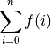
The operator has three parts to it. Below it is a bound variable, i,
and the starting value for the range, written as 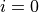. Above
it is the ending value for the range, usually something like  .
To the right is some function to execute for each value of the bound
variable. In this case, a generic function, 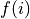 is shown.
This is read as “sum for
.
To the right is some function to execute for each value of the bound
variable. In this case, a generic function, 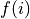 is shown.
This is read as “sum for  in the range 0 to ”.
in the range 0 to ”.
One common definition of uses a closed range, including the end values
of 0 and . However, since this is not a helpful definition
for Python, we will define to use a half-open interval. It has exactly
elements, including 0 and  ; mathematically, 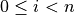.
This is how the
; mathematically, 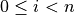.
This is how the range() function works, so there are a lot of advantages
to using a half-open interval
We prefer the following notation. Since statistical and mathematical texts often used 1-based indexing, some care is required when translating formulae to programming languages that use 0-based indexing.
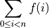
Our two statistical algorithms have a form more like the following
function. In this we are applying some function,  , to
each value,
, to
each value,  , of a list,
, of a list,  .
.
When computing the mean, as a special case, there is no function applied to the values in the list. When computing standard deviation, the function involves subtracting and multiplying.
Python Coding¶
Consider we look at the following summation:
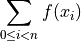
We can transform this definition directly into a for statement that sets the
bound variable to all of the values in the range, and does some
processing on each value of the list of integers, .
This is the Python
implementation of Sigma. This computes two values, the sum, s
and the number of elements, n.
s = sum(theList)
n = len(theList)
When computing the standard deviation, we do something that has the following overall pattern:
s = sum(f(x) for x in theList)
n = len(theList)
Where the  calculation computes the measure of
deviation from the average.
calculation computes the measure of
deviation from the average.
Statistical Algorithms¶
We’ll look at two important algorithms:
mean, and
Mean¶
Computing the mean of a list of values, x, is relatively simple. The mean is
the sum of the values divided by the number of values in the list. Here’s
the formal definition of the mean,  , of a list of values, .
There are items in the list, 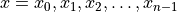.
, of a list of values, .
There are items in the list, 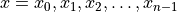.

The definition of the mathematical operator leads us to the following
method for computing the mean:
sum(self)/len(self)
This matches the mathematical definition nicely.
Standard Deviation¶
The standard deviation can be done a few ways. We’ll use the formula shown below. This computes a deviation measurement as the square of the difference between each sample and the mean.
The sum of these measurements is then divided by the number of values times the number of degrees of freedom to get a standardized deviation measurement.
Again, the formula summarizes the for statement, so we’ll show the formula followed by
an overview of the code.
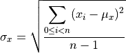
The definition of the mathematical operator leads us to the following
method for computing the standard deviation:
We can use a generator expression to compute the squares of the deviations
from the mean. The expression (x-m)**2 for x in self is a sequence of
values. The sum() function can sum this sequence.
m = mean(x)
math.sqrt(sum((x-m)**2 for x in self) / (len(self)-1))
This seems to match the mathematical definition nicely.
IntegerStatistics Design¶
-
class
IntegerStatistics(list)¶ IntegerStatisticscomputes several simple descriptive statistics ofintvalues in alist.This extends
listwith some additional methods.
Constructors¶
Since this class extends the built-in list, we’ll leverage the existing constructor.
Statistics Deliverables¶
There are three deliverables for this exercise. These classes will include the complete Python docstring.
The
IntegerStatisticsclass.A unit test of the
IntegerStatisticsclass.Prepare some simple list (or tuple) of test data.
The results can be checked with a spreadsheet
An update to the overall
Simulatorinstance to use anIntegerStatisticsobject to compute the mean and standard deviation of the peak stake. It also computes the mean and standard deviation of the length of each session of play.
Here is some standard deviation unit test data.
Sample Value |
10 |
8 |
13 |
9 |
11 |
14 |
6 |
4 |
12 |
7 |
5 |
Here are some intermediate results and the correct answers given to 6 significant digits. Your answers should be the same to the precision shown.
- sum
99
- count
11
- mean
9.0
- sum (x-m)**2
110.0
- stdev
3.317
Looking Forward¶
The key feature of this simulator is introducing different kinds of betting
strategies. Let’s look at a player that bets at random. It’s important
to compare random betting against the persistent better of the Passenger57 class.
The house edge is the same and the performance of the two strategies should
be very similar.